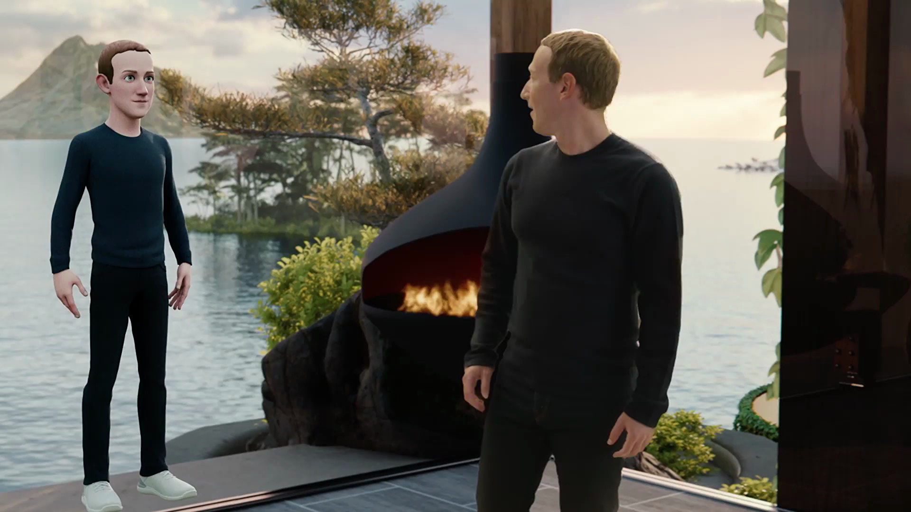
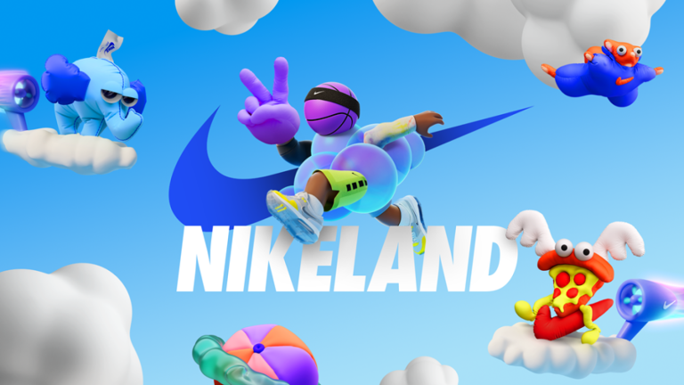

Metaverso
postado 02 abril 2022
O Metaverso é uma representação do mundo real em um ambiente virtualimersivo, construído aplicando múltiplas tecnologias, como RealidadeVirtual, Realidade Aumentada e Blockchain.
Nessa realidade as pessoas se comunicam, trabalham, aprendem e socializam umas com as outras por meio de seus avatares 3D (bonecosvirtuais personalizados).
Um de seus principais objetivos é simular a realidade, este ambiente é real, já existe e rende milhões, grandes empresas já investemneste “novo mundo”.
O Metaverso tem por finalidade propiciar que pessoas e empresasinterajam num ambiente digital, em experiências similares às do mundo físico. Oferece forma diferente de realizar negócios, que podeou não fazer sentido e ter utilidade prática para a sua vida ou negócios na atualidade.
Grandes empresas que fazem parte desse universo:

O ano de 2021 foi marcado pelo anúncio de uma novidade tecnológica por parte do fundador da maior rede social do mundo. Foi no final de outubro do ano passado que Mark Zuckerberg apresentou o projeto de metaverso da sua empresa Facebook.
Diversas empresas já estão fazendo investimentos no metaverso,
só no ano passado, startups de tecnologia levantaram quase US$ 10,4 bilhões (R$ 57,8 bilhões) de fundos de capital de risco.
Empresas que estão utilizando e já lançaram produtos no metaverso. Alguns exemplos são Nike, Ralph Lauren, Itaú, Vans, Gucci, Balenciaga, Burberry, Stella Artois e Lojas Renner.
O Facebook mudou o nome para “Meta” (Meta Platforms) e está investindo em tecnologia que permitirá conexões sociais no metaverso.
Recentemente, a empresa McDonald’s apresentou pedido de registro de marca, nos Estados Unidos, para a criação de um restaurante virtual no metaverso. O objetivo é entregar produtos virtuais (alimentos/bebidas) e também comida de verdade no domicílio dos clientes.
NIKE

Com o objetivo de entrar de vez no metaverso, em 2021 a Nike anunciou a compra da RTFKT, empresa que fabrica tênis digitais e utiliza NFT, autenticação blockchain e realidade aumentada.
O objetivo da maior patrocinadora de nome dos esportes com a compra foi poder conectar seus tênis físicos às versões digitais e assim atrair fãs e clientes que gostam da união entre moda e games.
Além disso, a Nike lançou também seu próprio mundo virtual na plataforma de videogames online Roblox, a Nikeland.
Vale a pena ficar de olho e acompanhar de perto tudo o que este universo está e irá proporcionar.